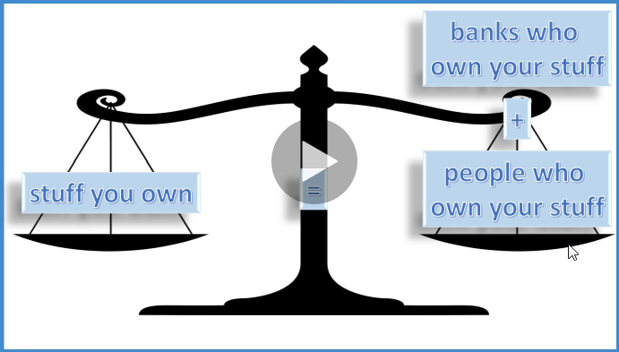
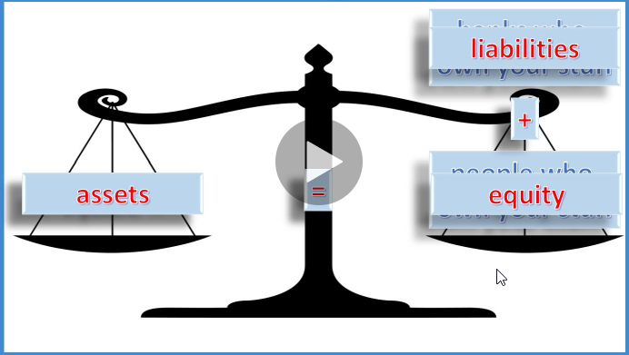
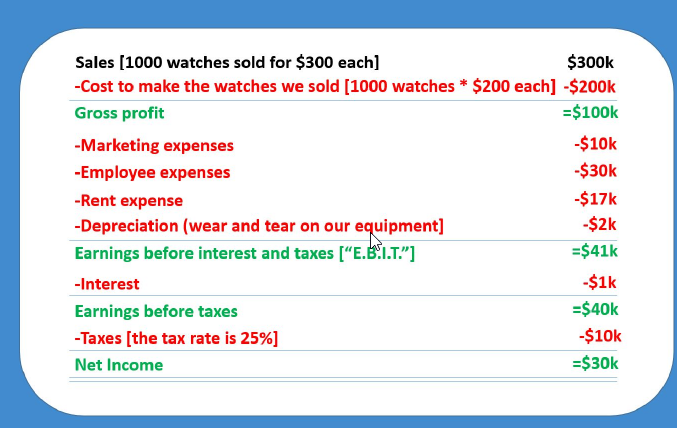
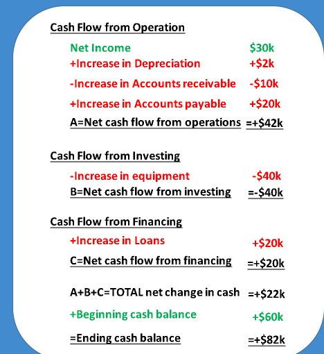
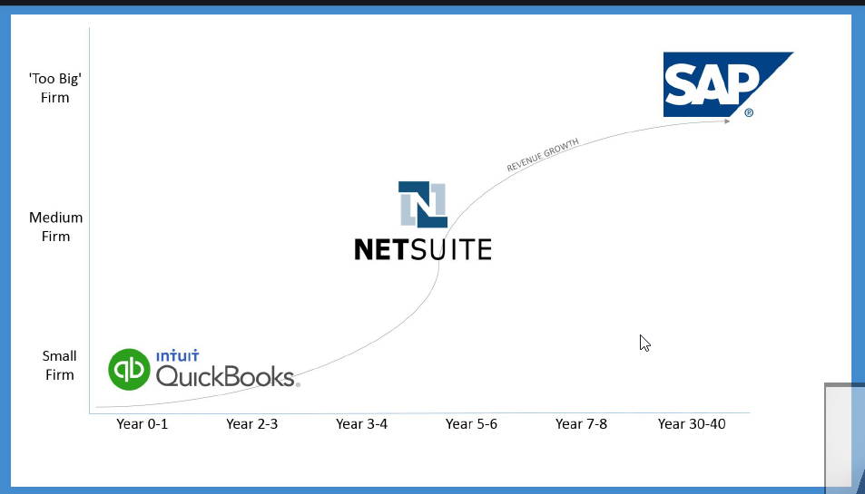
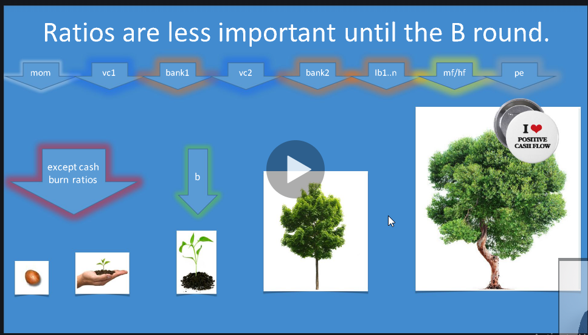
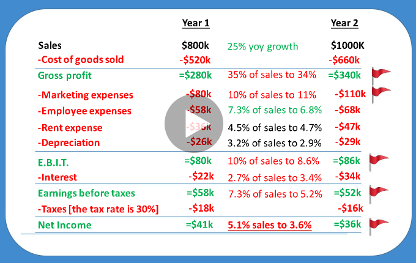

-->The biggest risk is not taking any risk.....in a world that is changing really quickly, the only strategy that is guaranteed to fail is not taking risks.
-->You can really accomplish anything in life if you're confident
-->Confidence is contagious. So is lack of confidence
-->Don't memorize accounting or finance
ex:
we start a company called Banana Watch
Topic: Balance Sheet
Balance sheet jusk kind of tracks what do you own or who owns your stuff




------------------------------------------------------------------------------------------------------------
Income Statement
ex:
How much do i make?
-->and the top of the income statement is something called sales which people also call revenue or top line, net income is bottom line
ex:
B:
1-amount it took us to sell the watches
2-how much it cost us to make the watches
3-marketing expenses
4-salaries of our employees
5-rent
6-wear and tear on our equipment["depreciation"]
7-interest on our bank loan
8-Taxes
A-B=Net Income

interest-->mean paying tax on interest of income
income statement-->Cash is king

Increase in Accounts receivable-->mean that customer buying with credit card and doesn't receive cash yet
Increase in Accounts payable-->we bought a lot of supplies for our watches from company that makes really cool crystal and sapphire is watch face, but we haven't paid for yet
-->You want to pay you debt as late as you can as long as you don't pay interest expense and everybody else that does business with you they want to screw you, they want to pay you back as late as they can as long as they don't receive pay interest to us, that means if i pay everybody back a month later than i should without having a penalty that's an extra 1% benefit i get that month

-->You don't need to do those financial statements yourself anymore

Why do we care about financial ratios?
1-Equity investors can decide to invest or they can assess investment performance
2-Lenders can decide to lend or they can assess loan performance
3-Business owners can track performance



-->many company belly up because of run out of cash
---------------------------------------------------------------------------
Liquidity Ratios:
measure our ability to pay short term debt(can we get a loan?)
Current Ratio = current assets/current liabilities , if > 1 then banks think you can pay your bills

quick ratio = (current - inventory)/current liabilities
-->When you combine ignorance and leverage, you get some pretty interesting results - Warren Buffet
-->leverage is basically financial weapons of mass destruction according to warren buffet
-->Debt to total assets = debt/assets
-->interest coverage = EBITDA/interest
-->ROA = net income/assets
-->ROE = net income/equity
-----------------------------------------------------------
-->When you're managing people you always want to praise in public and criticize in private
-->ask your boss feedback every three months
-->you'll never get promoted unless you ask to be promoted, you'll never get a raise, unless you ask get a raise, so you have to ask? so ask your boss what do i need to be considered for promotion for the next level?
------------------------------------------------------------
summary
On the balance sheet:
Assets+Equity=Liabilities
The best way to think of this is to assume that there is a scale. On the left side of the scale is stuff in your possession like a house or a car (these are called Assets). On the other side of the scale are the people or companies that own your assets, including you. Examples of people or companies that own your house or car include you and other people that own part of your company (called Equity) and banks that lent you money to finance your house or car (called Liabilities). The left side of the scale (Assets) must always equal the right side of the scale (Liabilities plus Equity).
On the income statement:
Sales-Expenses = Net Income
Net income is sales (or revenue, which is the same thing as sales) minus expenses. However, net income does not mean cash in your pocket. Why? Because some of your customers might have paid with a post dated check or with a credit card, which means you have not collected the money yet. As a result, we need another financial statement to tell us how much money we have in our pocket for a given financial period; this other financial statement is called a Cash Flow Statement
On the cash flow statement
Depreciation is addded to net income
When you buy a car or a factory, you can depreciate that car or factory every year. For example, if you buy a car for $100 and it will last 10 years, then you can depreciate that car by $10 each year. Depreciation is an expense and it is awesome because the government is encouraging you to invest in a car or a factory for your company. How? Well if you use that annual $10 as a depreciation expense, then the amount of $ you will pay in taxes is lower! If you have pre tax income of $20 and a tax rate of 50% then instead of paying $10 in tax, you only pay $5 if you account for depreciation.
The current ratio is:
current assets/current liabilities
Banks love it when you have more assets than liabilities. Recall that assets = liabilities plus equity. If your financing of debt to buy your assets is low, then the bank feels more comfortable with your ability to pay your debt off (assuming you use debt, which I don't advise doing for an early stage company). You always want current assets / current liabilities to be way higher than 1. Please don't memorize any equations ever. Rather, understand them and then you will remember them forever
The interest coverage ratio:
Measures how many times your EBITDA(also called operating profit) can cover or pay your interest expense
If you have debt, banks need to know that your annual income is way higher than your annual interest expense. This number needs to be way higher than 1 or banks will think that you might default on your loans
-----------------------------------------------------------